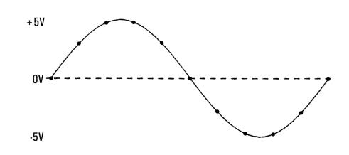

Level Triggering
Level triggering is available only on the 34465A/70A with the DIG option. Level triggering allows you to trigger measurements at some defined point on the input signal, such as when the signal crosses zero volts or when it reaches the midpoint of its positive or negative peak amplitude. For example, this graphic shows sampling beginning as the input signal crosses 0V with a positive slope:

About Level Trigger
Level triggering is available for these measurement functions:
- DC voltage and DC current
- AC voltage and AC current
- 2-wire and 4-wire resistance with offset compensation off, and low power off
- Temperature, RTD or thermistor sensors only
- Frequency and period
The level trigger is edge-sensitive. That is, the instrument must detect a change in the quantity being measured from one side of the level setting to the other side (direction controlled by Slope setting). For example, if the Slope is positive, then the quantity being measured must first reach a value below the set level before a trigger event can be detected.
Level trigger performance is not uniform. Its accuracy, latency, and sensitivity are dependent on other DMM features. These dependencies vary by measurement function as described below.
DC voltage, DC current, and 2-wire resistance considerations
These measurement functions can use a fast-response detector built into the hardware for fixed-range measurements. For lowest latency and highest sensitivity, use a fixed range when using level trigger. However, trigger level accuracy is reduced when the hardware detector is used.
To increase trigger level accuracy and reduce sensitivity (avoid false triggers due to noise), use autorange:
- When auto-range is enabled, trigger level accuracy is increased, latency is increased, and sensitivity is decreased as the aperture or NPLC setting is increased.
- When auto-range is enabled, trigger level accuracy is increased, latency is increased, and sensitivity is decreased if autozero is enabled.
- When auto-range is enabled, range changes may be made while waiting for the trigger crossing which can cause additional latency/uncertainty.
4-wire resistance and temperature considerations
- Trigger level accuracy is increased, latency is increased, and sensitivity is decreased as aperture or NPLC is increased.
- Fixed range (only available for resistance) eliminates uncertainties (due to range change) in trigger latency.
AC voltage and AC current considerations
- Trigger latency is increased, and sensitivity is decreased as filter bandwidth is increased.
- Trigger latency can be controlled by trigger delay setting.
- Fixed range eliminates uncertainties (due to range change) in trigger latency.
- Autorange uncertainties become worse as filter bandwidth is increased.
Frequency and period considerations
- Trigger level accuracy is increased, latency is increased, and sensitivity is decreased as gate time is increased.
- Fixed voltage range eliminates uncertainties (due to range change) in trigger latency.